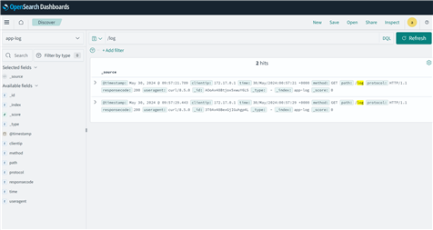
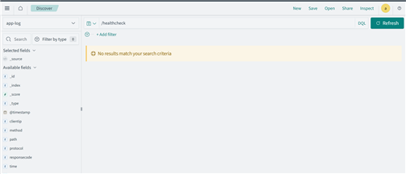
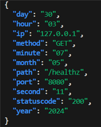
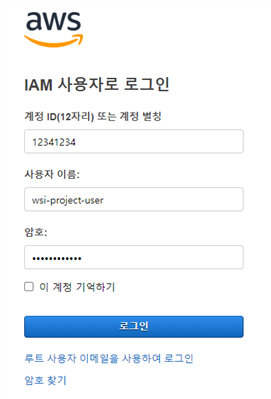
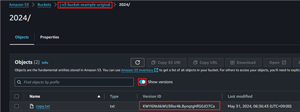
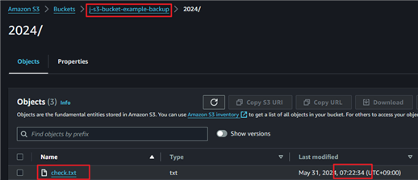
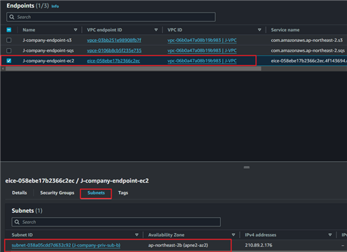
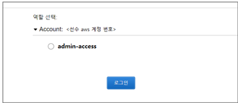
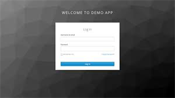

채점 유의사항
※ 다음 사항을 유의하여 채점하시오.
- AWS의 지역은 과제별로 명시된 리전을 사용합니다.
- 웹페이지 접근은 크롬이나 파이어폭스를 이용합니다.
- 웹페이지에서 언어에 따라 문구가 다르게 보일 수 있습니다.
- shell에서의 명령어의 출력은 버전에 따라 조금 다를 수 있습니다.
- 문제지와 채점지에 있는
<>는 변수입니다. 해당 부분을 변경해 입력합니다. - 채점은 문항 순서대로 진행해야 합니다.
- 삭제된 채점자료는 되돌릴 수 없음으로 유의하여 진행하며, 이의신청까지 완료 이후 선수가 생성한 클라우드 리소스를 삭제합니다.
- 부분 점수가 있는 문항은 채점 항목에 부분 점수가 적혀져 있습니다.
- 부분 점수가 따로 없는 문항은 모두 맞아야 점수로 인정됩니다.
- 리소스의 정보를 읽어오는 채점항목은 기본적으로 스크립트 결과를 통해 채점을 진행하며, 만약 선수가 이의가 있다면 명령어를 직접 입력하여 확인해볼 수 있습니다.
- [ ] 기호는 채점에 영향을 주지 않습니다.
- 명령어 입력 Box 안의 명령줄은 한 줄 명령어입니다. 별도의 지시가 없으면 수정 없이 박스 안의 전체 내용을 복사하고 쉘에 붙여넣어 명령을 실행합니다.
- (예상 출력)은 바로 이전 (명령어 입력)의 예상 출력을 의미합니다.
배점 요약
주요항목별 배점
| 번호 | 주요항목 | 배점 | 채점방법 | 채점시기 |
|---|---|---|---|---|
| 1 | 경북2과제3번 Elastic_stack |
3.0 | 합의 | 경기 종료후 |
| 2 | 광주2과제3번 Collect application logs using Fluent-bit and Fluentd |
3.0 | 합의 | 경기 종료후 |
| 3 | 대전2과제3번 EKS Observability with FluentBit |
3.0 | 합의 | 경기 종료후 |
| 4 | 부산2과제2번 Governance |
3.0 | 합의 | 경기 종료후 |
| 5 | 서울2과제1번 Image resizing on Edge location |
3.0 | 합의 | 경기 종료후 |
| 6 | 서울2과제3번 IAM security maintenance system |
3.0 | 합의 | 경기 종료후 |
| 7 | 제주2과제3번 Secure networking |
3.0 | 합의 | 경기 종료후 |
| 8 | 충남2과제1번 Dynamic IAM Role Authorization Enforcement |
3.0 | 합의 | 경기 종료후 |
| 9 | ClientVPN | 3.0 | 합의 | 경기 종료후 |
| 10 | Keycloak | 3.0 | 합의 | 경기 종료후 |
| 합계 | 30 |
세부항목별 배점
| 번호 | 주요항목 | 세부항목(채점방법) | 배점 |
|---|---|---|---|
| 1-1 | 경북2과제3번 Elastic_stack | Bastion EC2 – 인스턴스 타입 확인 | 0.2 |
| 1-2 | 경북2과제3번 Elastic_stack | App EC2 – 인스턴스 타입 확인 | 0.2 |
| 1-3 | 경북2과제3번 Elastic_stack | 웹 어플리케이션 - API 요청 확인 | 0.4 |
| 1-4 | 경북2과제3번 Elastic_stack | OpenSearch – 도메인 확인 | 0.4 |
| 1-5 | 경북2과제3번 Elastic_stack | OpenSearch – 세부설정확인 | 0.8 |
| 1-6 | 경북2과제3번 Elastic_stack | OpenSearch – 로그 확인 | 1 |
| 2-1 | 광주2과제3번 Collect application logs using Fluent-bit and Fluentd | 기본 배포 구성 확인 | 0.6 |
| 2-2 | 광주2과제3번 Collect application logs using Fluent-bit and Fluentd | 중앙 집중식 로깅 확인 | 1.2 |
| 2-3 | 광주2과제3번 Collect application logs using Fluent-bit and Fluentd | Application Logging | 1.2 |
| 3-1 | 대전2과제3번 EKS Observability with FluentBit | EKS – EKS Cluster 생성 확인 | 0.24 |
| 3-2 | 대전2과제3번 EKS Observability with FluentBit | EKS – Namespace 확인 | 0.24 |
| 3-3 | 대전2과제3번 EKS Observability with FluentBit | CloudWatch Log Group 생성 확인 | 0.24 |
| 3-4 | 대전2과제3번 EKS Observability with FluentBit | EKS Setting – Deployment 확인 | 0.24 |
| 3-5 | 대전2과제3번 EKS Observability with FluentBit | EKS Setting – Sidecar Pattern 확인 | 0.64 |
| 3-6 | 대전2과제3번 EKS Observability with FluentBit | Application – Application 확인 | 0.4 |
| 3-7 | 대전2과제3번 EKS Observability with FluentBit | Application – CloudWatch Log Stream 생성 확인 | 0.44 |
| 3-8 | 대전2과제3번 EKS Observability with FluentBit | Application – 로그 형식 확인 | 0.56 |
| 4-1 | 부산2과제2번 Governance | EC2 Server Configuration | 0.4 |
| 4-2 | 부산2과제2번 Governance | IAM User | 0.4 |
| 4-3 | 부산2과제2번 Governance | Trailing | 0.4 |
| 4-4 | 부산2과제2번 Governance | CloudWatch - User Login | 0.4 |
| 4-5 | 부산2과제2번 Governance | Cloudwatch - Login Log | 1 |
| 4-6 | 부산2과제2번 Governance | Lambda Configuration | 0.4 |
| 5-1 | 서울2과제1번 Image resizing on Edge location | S3 Bucket | 0.2 |
| 5-2 | 서울2과제1번 Image resizing on Edge location | CloudFront - Resizing | 0.8 |
| 5-3 | 서울2과제1번 Image resizing on Edge location | CloudFront - Redirection | 0.6 |
| 5-4 | 서울2과제1번 Image resizing on Edge location | CloudFront - Caching | 0.4 |
| 5-5 | 서울2과제1번 Image resizing on Edge location | CloudFront - Ignore caching | 0.4 |
| 5-6 | 서울2과제1번 Image resizing on Edge location | CloudFront - CloudFront function | 0.4 |
| 5-7 | 서울2과제1번 Image resizing on Edge location | Lambda - Runtime | 0.2 |
| 6-1 | 서울2과제3번 IAM security maintenance system | tester | 0.2 |
| 6-2 | 서울2과제3번 IAM security maintenance system | tester admin role | 0.2 |
| 6-3 | 서울2과제3번 IAM security maintenance system | mfaBucketDeleteControl | 1.2 |
| 6-4 | 서울2과제3번 IAM security maintenance system | user_group_kr | 0.2 |
| 6-5 | 서울2과제3번 IAM security maintenance system | Only Seoul region | 1.2 |
| 7-1 | 제주2과제3번 Secure networking | S3 - S3 이름 | 0.12 |
| 7-2 | 제주2과제3번 Secure networking | S3 - S3 접근 확인 | 0.64 |
| 7-3 | 제주2과제3번 Secure networking | S3 - 백업 버킷 파일복사 확인 | 0.64 |
| 7-4 | 제주2과제3번 Secure networking | SQS - S3 이벤트 발생 확인 | 0.64 |
| 7-5 | 제주2과제3번 Secure networking | SQS - EC2 이벤트 발생 확인 | 0.28 |
| 7-6 | 제주2과제3번 Secure networking | NAT G/W & Internet G/W 생성 여부 확인 | 0.4 |
| 7-7 | 제주2과제3번 Secure networking | endpoint - 인스턴스 접근 서브넷 확인 | 0.28 |
| 8-1 | 충남2과제1번 Dynamic IAM Role Authorization Enforcement | IAM - User Name | 0.16 |
| 8-2 | 충남2과제1번 Dynamic IAM Role Authorization Enforcement | IAM - User policy | 0.2 |
| 8-3 | 충남2과제1번 Dynamic IAM Role Authorization Enforcement | IAM - instance role Name | 0.16 |
| 8-4 | 충남2과제1번 Dynamic IAM Role Authorization Enforcement | IAM - instance role policy | 0.2 |
| 8-5 | 충남2과제1번 Dynamic IAM Role Authorization Enforcement | Monitoring Service Name -CloudTrail Name | 0.16 |
| 8-6 | 충남2과제1번 Dynamic IAM Role Authorization Enforcement | Monitoring Service Name - CloudWatch Alarm Name | 0.2 |
| 8-7 | 충남2과제1번 Dynamic IAM Role Authorization Enforcement | Monitoring Service Name - CloudWatch Log Group Name | 0.16 |
| 8-8 | 충남2과제1번 Dynamic IAM Role Authorization Enforcement | Lambda - Lambda name | 0.16 |
| 8-9 | 충남2과제1번 Dynamic IAM Role Authorization Enforcement | Employee - Alarm | 0.4 |
| 8-10 | 충남2과제1번 Dynamic IAM Role Authorization Enforcement | Employee - instance role policy test | 0.4 |
| 8-11 | 충남2과제1번 Dynamic IAM Role Authorization Enforcement | Admin - Alarm | 0.4 |
| 8-12 | 충남2과제1번 Dynamic IAM Role Authorization Enforcement | Admin - instance role policy test | 0.4 |
| 9-1 | ClientVPN | 도메인 질의 | 1.5 |
| 9-2 | ClientVPN | DB 연결 | 1.5 |
| 10-1 | Keycloak | admin 로그인 | 1.5 |
| 10-2 | Keycloak | dev 로그인 | 1.5 |
| 총점 | 30 |
채점 항목
1. 경북2과제3번 Elastic_stack
1-1. Bastion EC2 – 인스턴스 타입 확인 · 0.2점
1-1-A 채점 방법
aws ec2 describe-instances --filter Name=tag:Name,Values=wsi-bastion \
--query "Reservations[].Instances[].InstanceType"
1-1-A 기대 결과
[
"t3.small"
]
1-2. App EC2 – 인스턴스 타입 확인 · 0.2점
1-2-A 채점 방법
aws ec2 describe-instances --filter Name=tag:Name,Values=wsi-app \
--query "Reservations[].Instances[].InstanceType"
1-2-A 기대 결과
[
"t3.small"
]
1-3. 웹 어플리케이션 - API 요청 확인 · 0.4점
1-3-A 채점 방법
APP_PRIVATE_IP=$(aws ec2 describe-instances --filters "Name=tag:Name,Values=wsi-app" --query "Reservations[*].Instances[*].PrivateIpAddress" --output text)
curl $APP_PRIVATE_IP:5000/log
echo ""
curl $APP_PRIVATE_IP:5000/healthcheck
1-3-A 기대 결과
Log entry created
status: ok
1-4. OpenSearch – 도메인 확인 · 0.4점
1-4-A 채점 방법
aws opensearch list-domain-names | grep wsi-opensearch
1-4-A 기대 결과
"DomainName": "wsi-opensearch"
1-5. OpenSearch – 세부설정확인 · 0.8점
1-5-A 채점 방법
aws opensearch describe-domain --domain-name wsi-opensearch --query "DomainStatus.ClusterConfig.[InstanceCount, DedicatedMasterCount]"
1-5-A 기대 결과
[
2,
3
]
1-5-B 채점 방법
aws opensearch describe-domain --domain-name wsi-opensearch --query "DomainStatus.EngineVersion"
1-5-B 기대 결과
"OpenSearch_2.13"
1-5-C 채점 방법
OPENSEARCH_ENDPOINT=$(aws opensearch describe-domain --domain-name wsi-opensearch | jq -r '.DomainStatus.Endpoint')
curl -s -u admin:Password01! "https://$OPENSEARCH_ENDPOINT/_cat/indices?index=app-log"
1-5-C 기대 결과
green open app-log dWxHtcnyQcGsMwhGB0FMYw 5 1 2 0 34kb 17kb
- 위와 같이 app-log가 포함된 출력이 있는지 확인
1-5-D 채점 방법
OPENSEARCH_ENDPOINT=$(aws opensearch describe-domain --domain-name wsi-opensearch | jq -r '.DomainStatus.Endpoint')
curl -s -u admin:Password01! https://$OPENSEARCH_ENDPOINT/app-log | jq '.["app-log"].mappings.properties | keys[]'
1-5-D 기대 결과 — 정확히 일치하지 않아도 됨
"clientip"
"method"
"path"
"protocol"
"responsecode"
"time"
"useragent"
- 위와 같이 clientip, method, path, protocol, responsecode, time, useragent가 출력되는지 확인
1-6. OpenSearch – 로그 확인 · 1점
1-6-A 채점 방법
aws opensearch describe-domain --domain-name wsi-opensearch --output json | jq -r '.DomainStatus.Endpoint + "/_dashboards"'
1-6-A 기대 결과
- 대시보드 URL이 출력됩니다.
1-6-B 채점 방법 (대시보드 접속)
- 출력된 URL에 브라우저로 접속합니다.
- 아이디는 admin 패스워드는 Password01!로 로그인합니다.
- 대시보드의 discover탭에 접속합니다.
- index는 app-log로 지정합니다.
1-6-B 기대 결과

- 로그가 출력되는지 확인합니다.
1-6-C 채점 방법 (대시보드 확인)
- search에 /healthcheck를 입력합니다.
1-6-C 기대 결과

- 출력되는 로그가 없는지 확인합니다.
2. 광주2과제3번 Collect application logs using Fluent-bit and Fluentd
2-1. 기본 배포 구성 확인 · 0.6점
2-1-A 채점 방법
kubectl get deployment service-a -n app -o=json | jq '.spec.template.spec.containers' | grep '"image"' \
; kubectl get deployment service-b -n app -o=json | jq '.spec.template.spec.containers' | grep '"image"' \
; kubectl get deployment service-c -n app -o=json | jq '.spec.template.spec.containers' | grep '"image"'
2-1-A 기대 결과
"image": "250832144271.dkr.ecr.ap-northeast-2.amazonaws.com/service:a",
"image": "fluent/fluent-bit:latest",
"image": "250832144271.dkr.ecr.ap-northeast-2.amazonaws.com/service:b",
"image": "fluent/fluent-bit:latest",
"image": "250832144271.dkr.ecr.ap-northeast-2.amazonaws.com/service:c",
"image": "fluent/fluent-bit:latest",
- * 애플리케이션 이미지의 ECR URI 부분(
250832144271.dkr.ecr.ap-northeast-2.amazonaws.com/service:a등 — 계정 ID·리포지토리 이름·태그)은 선수마다 다를 수 있으며, 그 외("image":항목 6개, 사이드카 이미지fluent/fluent-bit:latest)는 전부 동일해야 함
2-1-B 채점 방법
NODE_COUNT=$(kubectl get nodes | grep Ready | wc -l) \
; DAEMONSET_COUNT=$(kubectl get daemonsets -n fluentd | tail -n 1 | awk {'print $4'}) \
; echo $(expr $NODE_COUNT - $DAEMONSET_COUNT) \
; kubectl describe -n fluentd daemonset fluentd | grep Image | grep fluent
2-1-B 기대 결과 — 정확히 일치
0
Image: fluent/fluentd-kubernetes-daemonset:v1.10.3-debian-cloudwatch-1.0
2-2. 중앙 집중식 로깅 확인 · 1.2점
2-2-A 채점 방법
cd /tmp
kubectl get daemonset fluentd -n fluentd -o yaml > fluentd.yaml
kubectl delete daemonset fluentd -n fluentd
date
kubectl exec -it -n app deployment.apps/service-a -- curl localhost:8080 > /dev/null 2>&1
kubectl exec -it -n app deployment.apps/service-b -- curl localhost:8080 > /dev/null 2>&1
kubectl exec -it -n app deployment.apps/service-c -- curl localhost:8080 > /dev/null 2>&1
sleep 30;
aws logs get-log-events --log-group-name /gwangju/eks/application/logs --log-stream-name service-a-logs --limit 1 --query 'events[*].message' --output json \
; aws logs get-log-events --log-group-name /gwangju/eks/application/logs --log-stream-name service-b-logs --limit 1 --query 'events[*].message' --output json \
; aws logs get-log-events --log-group-name /gwangju/eks/application/logs --log-stream-name service-c-logs --limit 1 --query 'events[*].message' --output json
kubectl apply -f fluentd.yaml
2-2-A 기대 결과
daemonset.apps "fluentd" deleted
Fri May 31 02:00:30 UTC 2024
[
"{\"log\":\"[2024-05-31 01:55:07,660] Service A 127.0.0.1 \\\"GET /\\\" 0.93ms 200\"}"
]
[
"{\"log\":\"[2024-05-31 01:55:08,682] Service B 127.0.0.1 \\\"GET /\\\" 0.45ms 200\"}"
]
[
"{\"log\":\"[2024-05-31 01:57:06,019] Service C 127.0.0.1 \\\"GET /\\\" 0.78ms 200\"}"
]
daemonset.apps/fluentd created
- * date 시간 이후의 로그가 나타나면 오답처리
2-3. Application Logging · 1.2점
2-3-A 채점 방법
date
kubectl exec -it -n app deployment.apps/service-a -- curl localhost:8080 > /dev/null 2>&1
kubectl exec -it -n app deployment.apps/service-b -- curl localhost:8080 > /dev/null 2>&1
kubectl exec -it -n app deployment.apps/service-c -- curl localhost:8080 > /dev/null 2>&1
sleep 30;
aws logs get-log-events --log-group-name /gwangju/eks/application/logs --log-stream-name service-a-logs --limit 1 --query 'events[*].message' --output json \
; aws logs get-log-events --log-group-name /gwangju/eks/application/logs --log-stream-name service-b-logs --limit 1 --query 'events[*].message' --output json \
; aws logs get-log-events --log-group-name /gwangju/eks/application/logs --log-stream-name service-c-logs --limit 1 --query 'events[*].message' --output json
2-3-A 기대 결과
Fri May 31 01:49:42 UTC 2024
[
"{\"log\":\"[2024-05-31 01:49:43,591] Service A 127.0.0.1 \\\"GET /\\\" 0.59ms 200\"}"
]
[
"{\"log\":\"[2024-05-31 01:49:44,473] Service B 127.0.0.1 \\\"GET /\\\" 0.95ms 200\"}"
]
[
"{\"log\":\"[2024-05-31 01:49:45,463] Service C 127.0.0.1 \\\"GET /\\\" 0.82ms 200\"}"
]
- * Service A, B, C가 한번씩 출력되어야 하며, date 명령어에 출력된 시간 이후의 로그가 30초 내로 기록되었는지 확인
3. 대전2과제3번 EKS Observability with FluentBit
3-1. EKS – EKS Cluster 생성 확인 · 0.24점
채점 방법
- SSH를 통해 EC2에 접근합니다.
- 아래 명령어 입력 후 “wsi-eks-cluster”가 출력되는지 확인합니다.
aws eks describe-cluster --name wsi-eks-cluster --query "cluster.name"
- 아래 명령어 입력 후 “1.29”가 출력되는지 확인합니다.
aws eks describe-cluster --name wsi-eks-cluster --query "cluster.version"
3-2. EKS – Namespace 확인 · 0.24점
채점 방법
- SSH를 통해 EC2에 접근합니다.
- 아래 명령어 입력 후 “wsi-ns”가 출력되는지 확인합니다.
kubectl get ns -o json | jq '.items[] | select(.metadata.name == "wsi-ns") | .metadata.name'
3-3. CloudWatch Log Group 생성 확인 · 0.24점
채점 방법
- SSH를 통해 EC2에 접근합니다.
- 아래 명령어 입력 후 “/wsi/eks/log/”가 출력되는지 확인합니다.
aws logs describe-log-groups --query "logGroups[?contains(logGroupName, '/wsi/eks/log/')].logGroupName"
3-4. EKS Setting – Deployment 확인 · 0.24점
채점 방법
- SSH를 통해 EC2에 접근합니다.
- 아래 명령어 입력 후 “wsi-dpm”이 출력되는지 확인합니다.
kubectl get deploy -n wsi-ns -o json | jq '.items[].metadata.name'
3-5. EKS Setting – Sidecar Pattern 확인 · 0.64점
채점 방법
- SSH를 통해 EC2에 접근합니다.
- 아래 명령어 입력 후 “wsi-cnt”와 “fluent-bit-cnt”가 출력되는지 확인합니다.
(wsi-cnt 2대, fluent-bit-cnt 2대 총 4개가 존재해야 합니다.)
kubectl get po -n wsi-ns -o json | jq '.items[].spec.containers[].name'
참고원문 불일치: 문제지는 Pod를 "2대 이상" 동작하게 구성하라고 하고, 채점지는 컨테이너가 "총 4개"(Pod 2개)여야 한다고 적혀 있음. 3_eksobserv.sh 3-5는 컨테이너 이름만 출력하며 개수를 판정하지 않음.
3-6. Application – Application 확인 · 0.4점
채점 방법
- SSH를 통해 EC2에 접근합니다.
- 아래 명령어를 입력합니다.
POD_NAME=$(kubectl get po -n wsi-ns -o jsonpath='{.items[0].metadata.name}')
- 아래 명령어 입력 후
{"status":"200"}이 출력되는지 확인합니다. (JSON 공백 유무는 무관)
kubectl exec -it $POD_NAME -n wsi-ns -- curl localhost:8080/2xx
- 아래 명령어 입력 후
{"status":"300"}이 출력되는지 확인합니다.
kubectl exec -it $POD_NAME -n wsi-ns -- curl localhost:8080/3xx
- 아래 명령어 입력 후
{"status":"400"}이 출력되는지 확인합니다.
kubectl exec -it $POD_NAME -n wsi-ns -- curl localhost:8080/4xx
- 아래 명령어 입력 후
{"status":"500"}이 출력되는지 확인합니다.
kubectl exec -it $POD_NAME -n wsi-ns -- curl localhost:8080/5xx
- 아래 명령어 입력 후
{"status":"ok"}이 출력되는지 확인합니다.
kubectl exec -it $POD_NAME -n wsi-ns -- curl localhost:8080/healthz
3-7. Application – CloudWatch Log Stream 생성 확인 · 0.44점
채점 방법
- SSH를 통해 EC2에 접근합니다.
- 아래 명령어 입력합니다.
CW_LOG_STREAM_NAME=$(aws logs describe-log-streams --log-group-name /wsi/eks/log/ \
--query "logStreams[].logStreamName" --output text)
POD_ID=$(kubectl get po -n wsi-ns -o jsonpath='{.items[0].metadata.name}')
MATCHING_LOG_STREAM_NAME="log-$POD_ID"
- 아래 명령어를 입력 후 “log-{Pod ID}”가 출력되는지 확인합니다.
{Pod ID}는 해당 Pod의 이름을 의미하며, 선수마다 값이 다를 수 있습니다.
[ "$CW_LOG_STREAM_NAME" == "$MATCHING_LOG_STREAM_NAME" ] && aws logs describe-log-streams \
--log-group-name /wsi/eks/log/ --query "logStreams[].logStreamName"
참고원문 스크립트(3_eksobserv.sh 3-7)의 비교는 로그 그룹에 로그 스트림이 하나뿐일 때만 참이 됩니다.
--output text는 여러 스트림 이름을 한 줄에 탭으로 이어 출력하므로, Pod가 2개 이상이어서 스트림이 여러 개이면 비교가 거짓이 되어 아무것도 출력되지 않습니다.
3-8. Application – 로그 형식 확인 · 0.56점
채점 방법
- SSH를 통해 EC2에 접근합니다.
- 아래 명령어를 입력합니다.
aws logs tail /wsi/eks/log/ | tail -n 1 | awk '{print substr($0,index($0,"{"))}' | jq .
- 아래 사진과 같이 day, hour, ip, method, minute, month, path, port, second, statuscode, year가 존재하는지 확인합니다. (하나라도 존재하지 않을 시 틀린 것으로 간주합니다.)
(Key의 위치는 달라도 상관없으며 Value 또한 차이가 있을 수 있습니다.)

4. 부산2과제2번 Governance
4-1. EC2 Server Configuration · 0.4점
4-1-A 채점 방법
aws ec2 describe-instances --filters "Name=tag:Name,Values=wsi-bastion-ec2" --query "Reservations[*].Instances[*].[InstanceId, InstanceType, IamInstanceProfile.Arn]" --output text | awk '{print $1,$2,$3}' | xargs -I {} bash -c 'INSTANCE_PROFILE_NAME=$(echo {} | awk -F"/" "{print \$NF}"); ROLE_NAME=$(aws iam get-instance-profile --instance-profile-name $INSTANCE_PROFILE_NAME --query "InstanceProfile.Roles[*].RoleName" --output text); echo "Instance ID: $(echo {} | awk "{print \$1}")"; echo "Instance Type: $(echo {} | awk "{print \$2}")"; aws iam list-attached-role-policies --role-name $ROLE_NAME --query "AttachedPolicies[*].[PolicyName, PolicyArn]" --output text'
4-1-A 기대 결과 — 정확히 일치, 순서 중요
Instance ID: i-xxxxxxxxxxxxxxxxxxxxxxxx
Instance Type: t3.small
AdministratorAccess arn:aws:iam::aws:policy/AdministratorAccess
4-2. IAM User · 0.4점
4-2-A 채점 방법
aws iam get-user --user-name wsi-project-user --query "User.UserName" --output text \
; aws iam list-attached-user-policies --user-name wsi-project-user --query 'AttachedPolicies[*].PolicyName' --output text && aws iam list-user-policies --user-name wsi-project-user --query 'PolicyNames' --output text
4-2-A 기대 결과 — 정확히 일치, 순서 중요
wsi-project-user
AdministratorAccess
4-3. Trailing · 0.4점
4-3-A 채점 방법
aws cloudtrail describe-trails --query 'trailList[?Name==`wsi-project-trail`].Name' --output json
4-3-A 기대 결과 — 정확히 일치, 순서 중요
[
"wsi-project-trail"
]
4-4. CloudWatch - User Login · 0.4점
4-4-A 채점 방법
- 계정에 로그아웃 후 생성했던 IAM 사용자로 로그인합니다.
4-4-A 기대 결과

4-5. Cloudwatch - Login Log · 1점
4-5-A 채점 방법
- 4-4에서 IAM 사용자로 로그인한 후 아래 명령어를 실행합니다. (실행에 4분 소요)
date -d "+9 hours" "+%Y-%m-%d.%H.%M.%S"
echo "4분 소요"
sleep 240
LOG_GROUP_NAME="wsi-project-login"
aws logs describe-log-groups --log-group-name-prefix $LOG_GROUP_NAME --query 'logGroups[?logGroupName==`wsi-project-login`].logGroupName' --output json
LATEST_LOG_STREAM=$(aws logs describe-log-streams --log-group-name $LOG_GROUP_NAME --order-by LastEventTime --descending --limit 1 --query 'logStreams[0].logStreamName' --output text)
aws logs get-log-events --log-group-name $LOG_GROUP_NAME --log-stream-name $LATEST_LOG_STREAM --limit 1 --query 'events[-1].{timestamp:timestamp, message:message}' --output json | jq -r '"\(.timestamp)\t\(.message)"' | while IFS=$'\t' read -r timestamp message; do echo -e "$(date -d @$((timestamp / 1000 + 9 * 3600)) '+%Y-%m-%d-%H:%M:%S')\t$message"; done
4-5-A 기대 결과 — timestamp확인하여 4분내에 포함되어있는지 확인
2024-07-21.20.23.52
[
"wsi-project-login"
]
2024-07-21.20.24.51 { USER : "wsi-project-user has logged in!" }
- ( UTC 시간까지 득점으로 허용 )
4-6. Lambda Configuration · 0.4점
4-6-A 채점 방법
aws lambda get-function --function-name wsi-project-log-function --query 'Configuration.FunctionName' --output json
4-6-A 기대 결과 — 정확히 일치, 순서 중요
"wsi-project-log-function"
5. 서울2과제1번 Image resizing on Edge location
사전 설정 (5_cdn.sh 기준) — 5-x 명령어가 사용하는 환경 변수를 먼저 설정하고 캐시를 무효화합니다. <Cloudfront_Distribution_ID>와 <4words>는 선수가 만든 값으로 바꿉니다.
export DISTRIBUTION_ID="<Cloudfront_Distribution_ID>"
export STATIC_BUCKET="wsi-static-<4words>"
export CF_DOMAIN=$(aws cloudfront get-distribution --id ${DISTRIBUTION_ID} --query "Distribution.DomainName" | sed s/\"//g)
export LAMBDA_NAME="wsi-resizing-function"
aws configure set default.region ap-northeast-2
aws configure set default.output json
export INVALIDATION_ID=$(aws cloudfront create-invalidation --distribution-id ${DISTRIBUTION_ID} --paths "/*" --query "Invalidation.Id" | sed s/\"//g)
aws cloudfront wait invalidation-completed --distribution-id ${DISTRIBUTION_ID} --id ${INVALIDATION_ID}
5-1. S3 Bucket · 0.2점
5-1-A 채점 방법
aws s3 ls s3://${STATIC_BUCKET}/ --recursive | awk '{print $4}'
5-1-A 기대 결과 — 정확히 일치, 순서 중요
dev/
images/glass.jpg
images/hamster.jpg
images/library.jpg
index.html
참고원문 불일치: 기대 결과에
dev/가 있으나, 원본자료의 배포 파일(서울2과제1번static/)에는images/(glass.jpg, hamster.jpg, library.jpg)와index.html만 있고dev/는 없으며, 문제지에도dev/를 만들라는 지시가 없음.
5-2. CloudFront - Resizing · 0.8점
5-2-A 채점 방법
curl -s "https://${CF_DOMAIN}/images/library.jpg?width=400&height=400" | file -b - | grep -oE '[0-9]+x[0-9]+' | tail -n 1
5-2-A 기대 결과 — 정확히 일치, 순서 중요
400x400
5-3. CloudFront - Redirection · 0.6점
5-3-A 채점 방법
curl -sIL -o /dev/null -w '%{url_effective}\n' https://${CF_DOMAIN}/dev/
curl -sIL -o /dev/null -w '%{url_effective}\n' https://${CF_DOMAIN}/
5-3-A 기대 결과 — 정확히 일치, <CF_DOMAIN>은 선수마다 다를 수 있음
https://<CF_DOMAIN>/index.html
https://<CF_DOMAIN>/index.html
5-4. CloudFront - Caching · 0.4점
5-4-A 채점 방법
curl -sI "https://${CF_DOMAIN}/images/library.jpg?width=123&height=32" | grep -i "x-cache"
curl -sI "https://${CF_DOMAIN}/images/library.jpg?width=123&height=32" | grep -i "x-cache"
curl -sI "https://${CF_DOMAIN}/images/library.jpg?width=123&height=40" | grep -i "x-cache"
5-4-A 기대 결과 — 정확히 일치, 순서 중요
x-cache: Miss from cloudfront
x-cache: Hit from cloudfront
x-cache: Miss from cloudfront
5-5. CloudFront - Ignore caching · 0.4점
5-5-A 채점 방법
curl -sI "https://${CF_DOMAIN}/index.html" | grep -i "x-cache"
curl -sI "https://${CF_DOMAIN}/index.html" | grep -i "x-cache"
5-5-A 기대 결과 — 정확히 일치, 순서 중요
x-cache: Miss from cloudfront
x-cache: Miss from cloudfront
5-6. CloudFront - CloudFront function · 0.4점
5-6-A 채점 방법
aws cloudfront get-distribution-config --id ${DISTRIBUTION_ID} --query "DistributionConfig.DefaultCacheBehavior.FunctionAssociations.Quantity > \`0\` || DistributionConfig.CacheBehaviors.Items[].FunctionAssociations.Quantity > \`0\`" --output text
5-6-A 기대 결과 — 정확히 일치, 순서 중요
True
5-7. Lambda - Runtime · 0.2점
5-7-A 채점 방법
aws lambda get-function-configuration --function-name ${LAMBDA_NAME} --region us-east-1 --query "Runtime" --output text
5-7-A 기대 결과 — 둘 중 하나만 일치
nodejs20.x
python3.9
6. 서울2과제3번 IAM security maintenance system
6-1. tester · 0.2점
6-1-A 채점 방법
aws iam list-users --query "Users[?UserName=='tester']" | grep -i username
6-1-A 기대 결과 — 정확히 일치, 순서 중요
"UserName": "tester",
6-2. tester admin role · 0.2점
6-2-A 채점 방법
aws iam list-attached-user-policies --user-name tester | grep AdministratorAccess
6-2-A 기대 결과 — 정확히 일치, 순서 중요
"PolicyName": "AdministratorAccess",
"PolicyArn": "arn:aws:iam::aws:policy/AdministratorAccess"
6-3. mfaBucketDeleteControl · 1.2점
6-3-A 채점 방법
aws iam get-policy-version --policy-arn arn:aws:iam::$(aws sts get-caller-identity --query "Account" --output text):policy/mfaBucketDeleteControl --version-id v1 --query 'PolicyVersion.Document.Statement[].Condition' | jq
6-3-A 기대 결과 — 정확히 일치, 순서 중요
[
{
"Bool": {
"aws:MultiFactorAuthPresent": "false"
}
}
]
6-4. user_group_kr · 0.2점
6-4-A 채점 방법
aws iam list-groups --query "Groups[?GroupName=='user_group_kr']" | grep GroupName
6-4-A 기대 결과 — 정확히 일치, 순서 중요
"GroupName": "user_group_kr",
6-5. Only Seoul region · 1.2점
6-5-A 채점 방법
export ACCOUNT_ID=$(aws sts get-caller-identity --query "Account" --output text)
aws iam simulate-principal-policy \
--policy-source-arn arn:aws:iam::$ACCOUNT_ID:user/tester \
--action-names ec2:DescribeInstances \
--region ap-northeast-2 | jq '.EvaluationResults[0].EvalDecision'
6-5-A 기대 결과 — "explicitDeny" 정확히 일치
"explicitDeny"
7. 제주2과제3번 Secure networking
7-1. S3 - S3 이름 · 0.12점
7-1-A 채점 방법
buckets=$(aws s3 ls | awk '{print $3}' | grep -E 'j-s3-bucket-[a-zA-Z0-9]{7}-(original|backup)')
bucket1=$(echo "$buckets" | grep 'original' | head -n 1)
bucket2=$(echo "$buckets" | grep 'backup' | head -n 1)
buckets=$(aws s3 ls | awk '{print $3}' | grep -E '^j-s3-bucket-[a-zA-Z0-9]{7}-(original|backup)$')
echo "$buckets"
7-1-A 기대 결과 — 정확히 일치
j-s3-bucket-<임의 7글자>-backup
j-s3-bucket-<임의 7글자>-original
7-2. S3 - S3 접근 확인 · 0.64점
7-2-A 채점 방법
echo "test" > test.txt
aws s3 cp test.txt s3://j-s3-bucket-<임의 7글자>-original/
aws s3 cp test.txt s3://j-s3-bucket-<임의 7글자>-original/2024/
aws s3 cp test.txt s3://j-s3-bucket-<임의 7글자>-backup/
sleep 80
7-2-A 기대 결과 — 정확히 일치
upload: ./test.txt to s3://j-s3-bucket-<임의 7글자>-original/test.txt
upload: ./test.txt to s3://j-s3-bucket-<임의 7글자>-original/2024/test.txt
upload: ./test.txt to s3://j-s3-bucket-<임의 7글자>-backup/test.txt
7-2-B 채점 방법
aws s3 cp test.txt s3://j-s3-bucket-<임의 7글자>-backup/2024/
7-2-B 기대 결과 — 정확히 일치
upload failed: ./test.txt to s3://j-s3-bucket-<임의 7글자>-backup/2024/test.txt An error occurred (AccessDenied) when calling the PutObject operation: Access Denied
7-3. S3 - 백업 버킷 파일복사 확인 · 0.64점
7-3-A 채점 방법
echo "copy" > copy.txt
aws s3 cp copy.txt s3://j-s3-bucket-<임의 7글자>-original/2024/
sleep 80
7-3-A 기대 결과 — 정확히 일치
upload: ./copy.txt to s3://j-s3-bucket-<임의 7글자>-original/2024/copy.txt
7-3-B 채점 방법 — 백업 버킷에 파일이 올라오는지 확인
- https://eu-west-1.console.aws.amazon.com/s3 으로 이동을 합니다.
j-s3-bucket-<임의 7글자>-backup으로 이동합니다. 2024/ 폴더로 이동 후에, copy.txt 파일이 있는 지 확인을 합니다. 있을 경우에j-s3-bucket-<임의 7글자>-original버킷과j-s3-bucket-<임의 7글자>-backup의 2024/ 폴더에 들어가서 show versions을 눌러서 copy.txt Version ID가 같은 지 확인 합니다. 4분 이내로 복사가 되어야 합니다.


7-4. SQS - S3 이벤트 발생 확인 · 0.64점
7-4-A 채점 방법
echo "check" > check.txt
aws s3 cp check.txt s3://j-s3-bucket-<임의 7글자>-original/2024/
sleep 80
7-4-A 기대 결과 — 정확히 일치
upload: ./check.txt to s3://j-s3-bucket-<임의 7글자>-original/2024/check.txt
7-4-B 채점 방법 — 수동
- https://eu-west-1.console.aws.amazon.com/s3/ 으로 이동합니다.
j-s3-bucket-<임의 7글자>-backup에 2024/ 폴더에 check.txt 이름의 파일이 1개 인지 확인을 하고, Last Modified를 확인합니다.

7-4-C 채점 방법 — Event 발생하는 지 확인
- https://eu-west-1.console.aws.amazon.com/sqs/v3/home?region=eu-west-1#/queues 으로 이동합니다. 만든 Queues으로 이동합니다. 이동 후에 상단 오른 쪽에 Send and receive messages을 클릭 합니다.
j-s3-bucket-<임의 7글자>-backup에 2024폴더의 파일이 올라오면 Poll for messages를 클릭 합니다. Sent 시간이j-s3-bucket-<임의 7글자>-backup에 2024/ 폴더에 check.txt 의 Last Modified 하고 같아야 합니다.

- (1분 정도의 오차범위가 있을 수 있습니다.) ex ) Last modified 07:22 -> SQS Send 07:23 O 07:21 X
7-5. SQS - EC2 이벤트 발생 확인 · 0.28점
7-5-A 채점 방법 — 수동
aws sqs send-message --queue-url https://sqs.eu-west-1.amazonaws.com/<account-id>/<queue-name> --message-body "Hello from EC2!"
<account-id>랑<queue-name>선수가 지정한 것들로 바꿔야 합니다.
7-5-A 기대 결과 — 정확히 일치
{
"MD5OfMessageBody": "d6d829edde2cd621a6f20ef7e8c15c61",
"MessageId": "37c567b2-175f-4b23-9532-bc6c3d117e47"
}
- MD5OfMessageBody와 MessageId는 다를 수 있습니다.
7-6. NAT G/W & Internet G/W 생성 여부 확인 · 0.4점
7-6-A 채점 방법 — 수동
https://eu-west-1.console.aws.amazon.com/vpcconsole/home?region=eu-west-1#NatGateways:
- 위에 URL로 이동해서 Bastion이 속한 VPC에 Nat G/W가 생성이 안되어 있는 지 확인 합니다.
https://eu-west-1.console.aws.amazon.com/vpcconsole/home?region=eu-west-1#igws:
- 위에 URL로 이동해서 Bastion이 속한 VPC에 IGW가 생성이 안되어 있는 지 확인 합니다.
- 하나라도 생성이 되어 있을 경우에 이 항목은 0점 처리 됩니다.
7-7. endpoint - 인스턴스 접근 서브넷 확인 · 0.28점
7-7-A 채점 방법 — 수동
- https://eu-west-1.console.aws.amazon.com/vpcconsole/home?region=eu-west-1#Endpoints:
- 위에 URL로 이동합니다. 이동 후에 VPC endpoint ID가 eice- 로 시작하는 endpoint를 클릭 후에 Subnet을 눌러서 J-company-priv-sub-b 으로 되어 있는 지 확인 합니다.

8. 충남2과제1번 Dynamic IAM Role Authorization Enforcement
8-1. IAM - User Name · 0.16점
8-1-A 채점 방법
aws iam list-users --query "Users[?UserName=='myadmin'].UserName"
aws iam list-users --query "Users[?UserName=='Employee'].UserName"
8-1-A 기대 결과 — 정확히 일치
[
"myadmin"
]
[
"Employee"
]
8-2. IAM - User policy · 0.2점
8-2-A 채점 방법
aws iam list-attached-user-policies --user-name myadmin
aws iam list-attached-user-policies --user-name Employee
8-2-A 기대 결과 — 정확히 일치
{
"AttachedPolicies": [
{
"PolicyName": "AdministratorAccess",
"PolicyArn": "arn:aws:iam::aws:policy/AdministratorAccess"
}
]
}
{
"AttachedPolicies": [
{
"PolicyName": "IAMFullAccess",
"PolicyArn": "arn:aws:iam::aws:policy/IAMFullAccess"
}
]
}
8-3. IAM - instance role Name · 0.16점
8-3-A 채점 방법
aws iam get-role --role-name wsc2024-instance-role --query 'Role.RoleName'
8-3-A 기대 결과 — 정확히 일치
"wsc2024-instance-role"
8-4. IAM - instance role policy · 0.2점
8-4-A 채점 방법
aws iam list-attached-role-policies --role-name wsc2024-instance-role --query "AttachedPolicies[].PolicyArn"
8-4-A 기대 결과 — 정확히 일치
[
"arn:aws:iam::aws:policy/AmazonSSMManagedInstanceCore"
]
8-5. Monitoring Service Name -CloudTrail Name · 0.16점
8-5-A 채점 방법
aws cloudtrail describe-trails --trail-name-list wsc2024-CT --query "trailList[].Name"
8-5-A 기대 결과 — 정확히 일치
[
"wsc2024-CT"
]
8-6. Monitoring Service Name - CloudWatch Alarm Name · 0.2점
8-6-A 채점 방법
aws cloudwatch describe-alarms --alarm-name-prefix wsc2024-gvn-alarm --query 'MetricAlarms[*].AlarmName'
8-6-A 기대 결과 — 정확히 일치
[
"wsc2024-gvn-alarm"
]
8-7. Monitoring Service Name - CloudWatch Log Group Name · 0.16점
8-7-A 채점 방법
aws logs describe-log-groups --log-group-name-prefix wsc2024-gvn-LG --query 'logGroups[].logGroupName' --output text
8-7-A 기대 결과 — 정확히 일치
wsc2024-gvn-LG
8-8. Lambda - Lambda name · 0.16점
8-8-A 채점 방법
aws lambda list-functions --query "Functions[?FunctionName=='wsc2024-gvn-Lambda'].FunctionName"
8-8-A 기대 결과 — 정확히 일치
[
"wsc2024-gvn-Lambda"
]
8-9. Employee - Alarm · 0.4점
8-9-A 채점 방법
USERNAME="Employee"
CREATED_KEYS=$(aws iam create-access-key --user-name "$USERNAME")
ACCESS_KEY_ID=$(echo "$CREATED_KEYS" | jq -r '.AccessKey.AccessKeyId')
SECRET_ACCESS_KEY=$(echo "$CREATED_KEYS" | jq -r '.AccessKey.SecretAccessKey')
aws configure set aws_access_key_id "$ACCESS_KEY_ID"
aws configure set aws_secret_access_key "$SECRET_ACCESS_KEY"
sleep 10
aws iam attach-role-policy --role-name wsc2024-instance-role --policy-arn arn:aws:iam::aws:policy/AdministratorAccess
rm -rf ~/.aws/*
timeout 180 bash -c 'while [ "$(aws cloudwatch describe-alarms --alarm-names "wsc2024-gvn-alarm" --query "MetricAlarms[0].StateValue" --output text)" != "ALARM" ]; do echo "Waiting for alarm to enter ALARM state..."; sleep 30; done; echo "Alarm is now in ALARM state."'
8-9-A 기대 결과 — 마지막 줄 Alarm is now in ALARM state. 일치 (Waiting … 줄의 개수는 다를 수 있음)
Waiting for alarm to enter ALARM state...
Waiting for alarm to enter ALARM state...
Waiting for alarm to enter ALARM state...
Waiting for alarm to enter ALARM state...
Alarm is now in ALARM state.
8-10. Employee - instance role policy test · 0.4점
8-10-A 채점 방법
aws iam list-attached-role-policies --role-name wsc2024-instance-role
8-10-A 기대 결과 — 정확히 일치
{
"AttachedPolicies": [
{
"PolicyName": "AmazonSSMManagedInstanceCore",
"PolicyArn": "arn:aws:iam::aws:policy/AmazonSSMManagedInstanceCore"
}
]
}
8-11. Admin - Alarm · 0.4점
8-11-A 채점 방법
USERNAME="myadmin"
CREATED_KEYS=$(aws iam create-access-key --user-name "$USERNAME")
ACCESS_KEY_ID=$(echo "$CREATED_KEYS" | jq -r '.AccessKey.AccessKeyId')
SECRET_ACCESS_KEY=$(echo "$CREATED_KEYS" | jq -r '.AccessKey.SecretAccessKey')
aws configure set aws_access_key_id "$ACCESS_KEY_ID"
aws configure set aws_secret_access_key "$SECRET_ACCESS_KEY"
sleep 10
aws iam attach-role-policy --role-name wsc2024-instance-role --policy-arn arn:aws:iam::aws:policy/AdministratorAccess
sleep 180 && aws cloudwatch describe-alarms --alarm-names "wsc2024-gvn-alarm" --query "MetricAlarms[0].StateValue" --output text
8-11-A 기대 결과 — ALARM 상태가 아닌지만 확인
INSUFFICIENT_DATA
OK
8-12. Admin - instance role policy test · 0.4점
8-12-A 채점 방법
aws iam list-attached-role-policies --role-name wsc2024-instance-role
8-12-A 기대 결과 — AmazonSSMManagedInstanceCore와 AdministratorAccess 두 정책이 모두 연결되어 있어야 함 (순서는 다를 수 있음)
{
"AttachedPolicies": [
{
"PolicyName": "AmazonSSMManagedInstanceCore",
"PolicyArn": "arn:aws:iam::aws:policy/AmazonSSMManagedInstanceCore"
},
{
"PolicyName": "AdministratorAccess",
"PolicyArn": "arn:aws:iam::aws:policy/AdministratorAccess"
}
]
}
9. ClientVPN
9-1. 도메인 질의 · 1.5점
주의아래 요소 중 어떤것이라도 해당하면 비정상 방법을 이용해 풀었음으로 Client VPN 항목 모두 채점하지 않습니다. 기타 사항 또한 확인 하여 부정한 방법을 사용 했다고 판단하면 채점하지 않습니다.
사전 확인
- Client VPN 연결이 해제되어 있는지 확인합니다.
- 선수 Windows PC에서 아래 명령어를 입력하여 쿼리가 실패하는지 확인합니다.
nslookup db.day2.local
- 선수 Windows PC에서 아래 명령어를 입력하여 호스트를 찾을 수 없다는 에러로 연결에 실패하는지 확인 합니다.
ping db.day2.local
- 선수 Windows PC에서 아래 명령어를 입력하여 listen 되는 포트가 없는지 확인합니다.
netstat -an | findstr 5432
채점 방법
- Windows PC에서 Client VPN에 연결합니다. 반드시 ws-day2 프로필을 사용 하는지 확인 합니다.

- VPN 연결 후 Windows에서 아래 명령어를 입력하여 올바른 canonical name과 IP가 반환 되는지 확인합니다.
nslookup db.day2.local
기대 결과
- canonical name :
rds.amazonaws.com.포함 출력 - IP address :
172.26.10.1~172.26.10.254혹은172.26.20.1~172.26.20.254사이 주소
9-2. DB 연결 · 1.5점
채점 방법
- Windows PC에서 Client VPN이 연결 되어 있는지 확인합니다. (ws-day2 프로필 사용)
- VPN에 연결 후 Windows에서 아래 명령어를 입력하여 DB 접근이 되는지 확인합니다.
psql -U day2_root -d day2 -h db.day2.local -p 5432
- psql 프롬프트에서 아래 명령어를 입력하여 day2 Database가 생성 되어 있는지 확인 합니다. (소문자 L)
\l
10. Keycloak
10-1. admin 로그인 · 1.5점
주의아래 요소 중 어떤것이라도 해당하면 비정상 방법을 이용해 풀었음으로 Keycloak 항목 모두 채점하지 않습니다. 기타 사항 또한 확인하여 부정한 방법을 사용 했다고 판단하면 채점하지 않습니다.
- 선수가 제출한 URL을 확인해 Keycloak 서버가 선수의 계정에 있는지 확인합니다.
채점 방법
- 브라우저 새 창을 열어 과제지에 적힌 Keycloak 주소로 접속 하여 아래 비슷한 페이지가 출력 되는지 확인합니다.

- 계정 이름에
admin<비번호>를 적어 정상적으로 로그인 되는지 확인합니다. - AWS 페이지로 전환 되어 아래와 비슷한 페이지가 보이는지 확인합니다. UI는 약간 다를 수 있지만 선수 계정 번호와 admin-access role은 일치 해야 합니다.

- admin-access Role 사용하여 AWS 계정에 정상 로그인 되는지 확인 합니다. 로그인 후 오른쪽 상단에 계정 정보를 확인 하여 계정 번호와 Role 이름을 확인합니다.
10-2. dev 로그인 · 1.5점
주의아래 요소 중 어떤것이라도 해당하면 비정상 방법을 이용해 풀었음으로 Keycloak 항목 모두 채점하지 않습니다. 기타 사항 또한 확인하여 부정한 방법을 사용 했다고 판단하면 채점하지 않습니다.
- 선수가 제출한 URL을 확인해 Keycloak 서버가 선수의 계정에 있는지 확인합니다.
채점 방법
- 브라우저 새 창을 열어 과제지에 적힌 Keycloak 주소로 접속하여 아래 비슷한 페이지가 출력 되는지 확인합니다.

- 계정 이름에
dev<비번호>를 적어 정상적으로 로그인 되는지 확인합니다. - AWS 페이지로 전환 되어 아래와 비슷한 페이지가 보이는지 확인합니다. UI는 약간 다를 수 있지만 선수 계정 번호와 poweruser-access role은 일치해야 합니다.

- poweruser-access Role 사용하여 AWS 계정에 정상 로그인 되는지 확인 합니다. 로그인 후 오른쪽 상단에 계정 정보를 확인 하여 계정 번호와 Role 이름을 확인합니다.
원문 대비 수정 내역
원문 대비 수정 내역 (36건) — 원본 시험지와 달라진 부분과 근거
| 위치 | 원문 | 수정 | 사유 |
|---|---|---|---|
| 주요항목별 배점 10 | Keycloack |
Keycloak |
오타(세부항목·본문은 Keycloak) |
| 세부항목 표 8-7, 8-7 제목 | CloudWtach |
CloudWatch |
오타 |
| 1-5-B 기대 결과 | 제목이 명령어 입력으로 표기됨 |
기대 결과 |
원문 표기 오류(내용은 출력값) |
| 1-5-D 기대 결과 | "useragent“ |
"useragent" |
둥근 따옴표 |
| 2-1-A 기대 결과 | service:c 줄과 fluent-bit 줄이 한 줄로 붙어 있음 | 두 줄로 분리 | 추출 시 줄바꿈 누락(명령은 "image" 줄을 6개 출력) |
| 2-1-A 비고 | 밑줄 친 부분을 제외하고 전부 동일해야 함 |
ECR URI 부분(계정 ID·리포지토리·태그)은 다를 수 있고 나머지는 동일해야 함 | 보이지 않는 밑줄 참조. 문제지(광주2과제3번)는 ECR 리포지토리 이름·태그를 지정하지 않고 사이드카 이미지 fluent/fluent-bit:latest만 지정 |
| 3-1, 3-7 명령어 | —query, "cluster.name“, "logStreams[].logStreamName“ |
--query, ASCII " |
긴 대시·둥근 따옴표로 실행 불가(3_eksobserv.sh 기준) |
| 3-3, 3-4 명령어 | logGroupName“, .metadata.name’ |
ASCII ", ' |
둥근 따옴표로 실행 불가(3_eksobserv.sh 기준) |
| 3-5 설명 | “wsi-cnt’와 ‘fluent-bit-cnt’ |
“wsi-cnt”와 “fluent-bit-cnt” |
따옴표 짝 오류 |
| 3-5 | - | NOTE 추가 | 문제지 "2대 이상" ↔ 채점지 "총 4개" 불일치 |
| 3-6 단계 번호 | 3.이 5번 반복 |
3.~7. |
번호 중복 |
| 3-6 기대 응답 | “{'status': '200'}“ 등 5곳 |
{"status":"200"} 등 |
둥근 따옴표·홑따옴표. 배포 app.py(대전2과제3번)가 jsonify({"status": …})로 JSON 반환 |
| 3-7 | - | NOTE 추가 | 3_eksobserv.sh 3-7 비교식은 로그 스트림이 1개일 때만 참이 됨(Pod 2개 이상 요구와 충돌) |
| 4-5-A 채점 방법 | 코드 블록 안에 로그인 후, 4분 소요 문장, "+%Y-%m-%d.%H.%M.%S“ |
문장을 블록 밖 설명으로 이동, ASCII " |
명령어가 아닌 줄이 섞여 붙여넣기 시 오류, 둥근 따옴표 |
| 5. 서울2과제1번 | 5-x 명령이 정의되지 않은 ${DISTRIBUTION_ID}, ${STATIC_BUCKET}, ${CF_DOMAIN}, ${LAMBDA_NAME} 사용 |
사전 설정 블록 추가 |
5_cdn.sh 첫 부분(환경 변수·리전 설정, 캐시 무효화)으로 복원. 무효화가 없으면 5-4·5-5의 첫 Miss 기대값이 성립하지 않을 수 있음 |
| 5-1 | - | NOTE 추가 | 기대 결과의 dev/가 배포 파일(static/)과 문제지에 없음 |
| 6-5-A 채점 방법 | 정의되지 않은 $ACCOUNT_ID 사용 |
export ACCOUNT_ID=… 줄 추가 |
6_iam.sh 첫 부분 기준 |
| 6-5-A 기대 결과 | 강조색 일치 |
"explicitDeny" 정확히 일치 |
보이지 않는 강조색 참조. 명령 출력은 EvalDecision 값 하나뿐 |
| 7-2-A, 7-3-A, 7-4-A | echo “test” 등 3곳 |
echo "test" 등 |
둥근 따옴표(파일 내용에 둥근 따옴표가 들어감) |
| 7-3-B~7-7 콘솔 URL·SQS URL | ap-northeast-2 (11곳) |
eu-west-1 |
문제지(제주2과제3번)가 "모든 리소스는 eu-west-1 리전", 서브넷 AZ eu-west-1a/b로 지정 |
| 7-4-B, 7-4-C | j-s3-bucket-example-backup (3곳) |
j-s3-bucket-<임의 7글자>-backup |
다른 항목과 같은 변수 표기로 통일 |
| 7-5-A 명령어 | --queue-url \ https://… \ --message-body "Hello from EC2!“ |
한 줄 명령, ASCII " |
줄 중간의 \ 와 둥근 따옴표로 실행 불가. 기대 MD5 d6d829ed…는 Hello from EC2!(ASCII)의 MD5와 일치 |
| 8-1 명령어·기대 결과 | UserName“, “myadmin”, “ Employee”, 배열 사이 ], |
ASCII ", 앞 공백·쉼표 제거 |
둥근 따옴표로 실행 불가, 실제 출력에는 쉼표가 없음 |
| 8-2 명령어 | --user-name mydmin |
--user-name myadmin |
오타. 8_gov_c.sh 8-2 myadmin |
| 8-2 기대 결과 | 두 출력 사이 }, |
} |
별개 명령 두 개의 출력이라 쉼표 없음 |
| 8-3 명령어·기대 결과 | 'Role.RoleName’, “wsc2024-instance-role” |
ASCII ', " |
둥근 따옴표 |
| 8-4 명령어·기대 결과 | PolicyArn“, “arn:aws:iam:aws:policy/…” |
ASCII ", arn:aws:iam::aws:policy/… |
둥근 따옴표, ARN의 :: 누락 |
| 8-5 명령어·기대 결과 | --query "trailList[].Name(닫는 따옴표 없음), “wsc2024-CT” |
닫는 " 추가, ASCII " |
실행 불가(8_gov_c.sh 기준) |
| 8-6 명령어 | --query 'MetricAlarms[*].AlarmName(닫는 따옴표 없음) |
닫는 ' 추가 |
실행 불가(8_gov_c.sh 기준) |
| 8-9 명령어 | timeout 180 bash -c '…ALARM state."(닫는 따옴표 없음) |
닫는 ' 추가 |
실행 불가(8_gov_c.sh 기준) |
| 8-9 기대 결과 | Wating, 밑줄 부분 일치 |
Waiting, 마지막 줄 Alarm is now in ALARM state. 일치(Waiting 줄 수는 무관) |
오타(스크립트 출력은 Waiting), 보이지 않는 밑줄 참조 — Waiting 줄 수는 알람 전환 시간에 따라 달라짐 |
| 8-11 명령어 | USERNAME="Admin" |
USERNAME="myadmin" |
8_gov_c.sh 8-11과 채점기준 8-1·8-2가 myadmin. 문제지(충남2과제1번) 사용자 이름도 myadmin으로 함께 수정 |
| 8-12 기대 결과 | 정책 1개짜리 JSON 두 개를 },로 이어 붙임, 정확히 일치 |
두 정책이 들어 있는 JSON 하나, "두 정책이 모두 연결되어 있어야 함(순서 무관)" | 명령은 1회 실행이라 출력도 객체 하나. 관리자 사용자가 붙인 AdministratorAccess가 남아 있어야 하는 것이 채점 의도 |
| 9-1, 9-2 명령어 | > nslookup …, >nslookup …, > ping …, > netstat …, > psql …, PSQL> \l |
프롬프트 기호 제거, \l은 "psql 프롬프트에서" 입력하도록 설명 |
채점 유의사항 12(박스 전체 복사)대로 붙여넣으면 cmd에서 >가 리디렉션으로 해석됨 |
| 10-1, 10-2 | admin<등번호>, dev<등번호> |
admin<비번호>, dev<비번호> |
근거 없음, 문제지 기준(추가2번 과제지는 <비번호>) |
| 10-1, 10-2 | 브라우저를 새창을 생성하여, 로그 인 후 |
브라우저 새 창을 열어, 로그인 후 |
비문·띄어쓰기 |